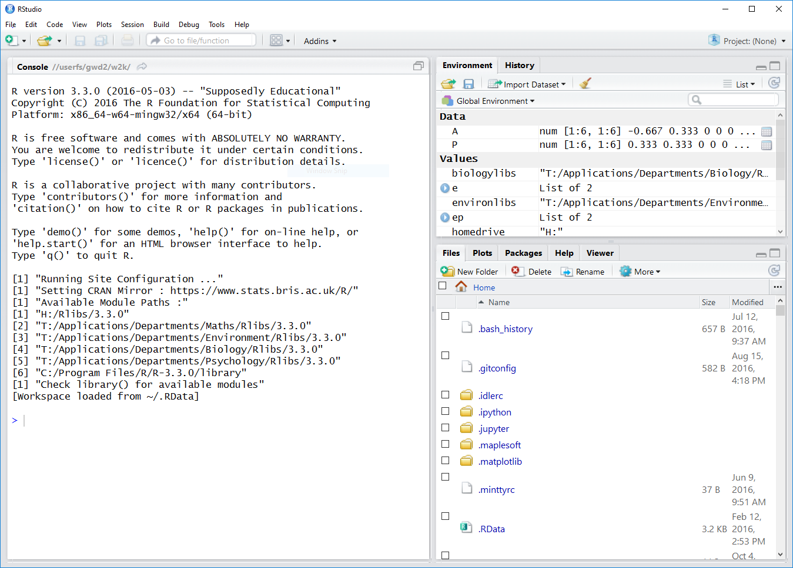

source("http://www.openintro.org/stat/data/arbuthnot.R")Intro Lab: Meeting R and RStudio
This tutorial is adapted from OpenIntro and is released under a Creative Commons Attribution-ShareAlike 3.0 Unported license. This lab was adapted for OpenIntro by Andrew Bray and Mine Çetinkaya-Rundel from a lab written by Mark Hansen of UCLA Statistics; it was extended for the University of York by Gustav Delius, and subsequently by Stephen Connor.
In this introduction we begin with the fundamental building blocks of R and RStudio: the interface, reading in data, and basic commands.
The first step is to open RStudio.
- If you are on a campus PC, RStudio is already installed and you can open it from the Windows Start menu. Just start typing ‘RStudio’ into the search box on the start menu and then click on RStudio when it shows up. (If you get a popup asking you whether you want to upgrade to a newer version of RStudio, simply click the “Ignore update” button.)
- If you would like to work on your own computer, you can download and install R from here and then download and install RStudio from here. Both are free and open-source and available for Windows, Mac and Linux.
Once you’ve opened RStudio, you should see a window similar to that depicted below.

A good way to work through these labs is is to have this file open on one half of your screen and RStudio on the other half. On a PC you can usually move a window to the left or right half of the screen by holding down the Windows key and pressing the left or right arrow key.
Note
You will see instructions to Complete quiz questions as you work thorugh this lab: remember that you should enter your answers in the Quiz for Intro Lab on the module VLE page. You can save your progress as you go, and then need to Submit your solutions when you are finished.
The panel in the upper right of the RStudio window contains your Environment as well as a History of the commands that you’ve previously entered. The lower right panel has several tabs, including Plots where any plots that you generate will show up.
The panel on the left is where the action happens. It’s called the Console. Every time you launch RStudio, it will have text at the top of the console giving lots of information that you can mostly ignore, including the version of R that you’re running. Below that information is the prompt. As its name suggests, this prompt is really a request, a request for a command. Initially, interacting with R is all about typing commands and interpreting the output. These commands and their syntax have evolved over decades (literally) and now provide what many users feel is a fairly natural way to access data and organize, describe, and invoke statistical computations.
To get you started, enter the following command at the R prompt (i.e. right after > on the console). You can either type it in manually or copy and paste it from this document.
Tip
If you’re using the html version of this document, then to copy the code you can simply hover your mouse over the box below: you should see a ‘Copy to clipboard’ symbol appear in the top right corner of the box – click on this, and then paste what you’ve copied into RStudio.
This command instructs R to access the OpenIntro website and fetch some data: the Arbuthnot baptism counts for boys and girls. You should see that the environment area in the upper right hand corner of the RStudio window now lists a data set called arbuthnot that has 82 observations on 3 variables.
As you interact with R, you will create a series of objects. Sometimes you load them as we have done here, and sometimes you create them yourself as the by-product of a computation or some analysis you have performed.
Note that because it is accessing data on the web, the above command will work in a computer lab, in the library, or at home; just as long as you have access to the internet.
The data: Dr. Arbuthnot’s baptism records
The Arbuthnot data set was compiled by Dr. John Arbuthnot, an 18th century physician, writer, and mathematician. He was interested in the ratio of newborn boys to newborn girls, so he gathered the baptism records for children born in London for every year from 1629 to 1710. We can take a look at the data by typing its name into the console and hitting Enter.
arbuthnotWhat you should see are four columns of numbers, each row representing a different year: the first entry in each row is simply the row number (an index we can use to access the data from individual years if we want), the second is the year, and the third and fourth are the numbers of boys and girls baptised that year, respectively. Use the scroll bar on the right side of the console window to examine the complete data set.
Tip
A nice feature of RStudio is that it comes with a built-in data viewer. Click on the name arbuthnot in the upper right window that lists the objects in your environment. This will bring up an alternative display of the Arbuthnot counts in the upper left panel of the RStudio window.
Moving back to the console, if we only want to see the first few lines of the data set, we can type
head(arbuthnot)
#> year boys girls
#> 1 1629 5218 4683
#> 2 1630 4858 4457
#> 3 1631 4422 4102
#> 4 1632 4994 4590
#> 5 1633 5158 4839
#> 6 1634 5035 4820Sometimes, as in this example, I’ll show you the output of the commands when I run them on my computer, so that you can compare with what you get when you run the commands yourself: any line starting with #> corresponds to code output.
Tip
Note that the row numbers in the first column are not part of Arbuthnot’s data. R adds them as part of its printout to help you make visual comparisons. You can think of them as the index that you see on the left side of a spreadsheet. In fact, the comparison to a spreadsheet will generally be helpful. R has stored Arbuthnot’s data in a kind of spreadsheet or table called a data frame.
You can see the dimensions of this data frame by typing:
dim(arbuthnot)
#> [1] 82 3This indicates that there are 82 rows and 3 columns (we’ll get to what the [1] means in a bit), just as it says next to the object in your Environment tab. You can see the names of these columns (or variables) by typing:
names(arbuthnot)
#> [1] "year" "boys" "girls"You should see that the data frame contains the columns year, boys, and girls. By this point, you might have noticed that many of the commands in R look a lot like functions; that is, invoking R commands means supplying a function with some number of arguments. The dim() and names() commands, for example, each took a single argument, the name of a data frame.
Some exploration
Let’s start to examine the data a little more closely. We can access the data in a single column of a data frame separately using a command like
arbuthnot$boysThis command will only show the number of boys baptised each year.
Notice that the way R has printed these data is different. When we looked at the complete data frame, we saw 82 rows, one on each line of the display. These data are no longer structured in a table with other variables, so they are displayed one right after another.
Objects that print out in this way are called vectors; they represent a set of numbers. R has added numbers in [brackets] along the left side of the printout to indicate locations within the vector. For example, 5218 follows [1], indicating that 5218 is the first entry in the vector. And if [43] starts a line, then that would mean the first number on that line would represent the 43rd entry in the vector.
R has some powerful functions for making graphics. We can create a simple plot of the number of girls baptised per year with the command
plot(x = arbuthnot$year, y = arbuthnot$girls) By default, R creates a scatterplot with each (x,y) pair indicated by an open circle. The plot itself should appear under the Plots tab of the lower right panel of RStudio.
Notice that the command above again looks like a function, this time with two arguments separated by a comma. The first argument in the plot function specifies the variable for the x-axis and the second for the y-axis. If we wanted to connect the data points with lines, we could add a third argument, the letter l for line.
plot(x = arbuthnot$year, y = arbuthnot$girls, type = "l")You might wonder how you are supposed to know that it was possible to add that third argument. Thankfully, R documents all of its functions extensively: you’ve already seen that clicking on any of the underlined commands in this page takes you to the relevant entry in the documentation. Another way to read what a function does, and learn the arguments that are available to you, is to just type in a question mark followed by the name of the function that you’re interested in. Try the following.
?plotCan you figure out how to produce a plot that shows both the points and the lines connecting them?
Notice that the help file replaces the plot in the lower right panel. You can toggle between plots and help files using the tabs at the top of that panel.
Now, suppose we want to plot the total number of baptisms. To compute this, we could use the fact that R is really just a big calculator. We can type in mathematical expressions like
5218 + 4683to see the total number of baptisms in 1629. We could repeat this once for each year, but there is a faster way. If we add the vector for baptisms for boys and girls, R will compute all sums simultaneously.
arbuthnot$boys + arbuthnot$girlsWhat you will see are 82 numbers (in that packed display, because we aren’t looking at a data frame here), each one representing the sum we’re after. Take a look at a few of them and verify that they are right.
We can now make a plot of the total number of baptisms per year with the command
plot(arbuthnot$year, arbuthnot$boys + arbuthnot$girls, type = "l")This time, note that we left out the names of the first two arguments. We can do this because the help file shows that the default for plot is for the first argument to be the x-variable and the second argument to be the y-variable.
Next we calculate the proportion of the baptised children that are boys. We can do this for the year 1629 with the command
5218 / (5218 + 4683)but this may also be computed for all years simultaneously:
arbuthnot$boys / (arbuthnot$boys + arbuthnot$girls)Note that with R, as with your calculator, you need to be conscious of the order of operations. Here, we want to divide the number of boys by the total number of newborns, so we have to use parentheses. Without them, R will first do the division, then the addition, giving you something that is not a proportion.
Tip
If you use the up and down arrow keys, you can scroll through your previous commands, your so-called command history. You can also access it by clicking on the History tab in the upper right panel. This will save you a lot of typing in the future.
In addition to simple mathematical operators like subtraction and division, you can ask R to make comparisons like greater than, >, less than, <, and equality, == (note that it has to be a double equal sign, not a single equal sign). For example, we can ask if boys outnumber girls in each year with the expression
arbuthnot$boys > arbuthnot$girlsThis command returns 82 values of either TRUE if that year had more boys than girls, or FALSE if that year did not (the answer may surprise you). This output shows a different kind of data than we have considered so far. In the arbuthnot data frame our values are numerical (the year, the number of boys and girls). Here, we’ve asked R to create logical data, data where the values are either TRUE or FALSE. In general, data analysis will involve many different kinds of data types, and one reason for using R is that it is able to represent and compute with many of them.
You can count the number of entries for which the condition is TRUE by just summing the entries in the vector
sum(arbuthnot$boys > arbuthnot$girls)The reason this works is that R automatically converts TRUE to 1 and FALSE to 0 when asked to do a numerical calculation with these values.
A newer data set
In the previous few pages, you recreated some of the displays and preliminary analysis of Arbuthnot’s baptism data. To practise your new skills, you will now repeat these steps, but for present day birth records in the United States. Load up the present day data with the following command.
source("http://www.openintro.org/stat/data/present.R") The data are stored in a data frame called present.
These data come from a report by the Centers for Disease Control. Check it out if you would like to read more about an analysis of sex ratios at birth in the United States.
To exit RStudio you can click the cross in the upper right corner of the whole window. You will be prompted to save your workspace. If you click save, RStudio will save the history of your commands and all the objects in your workspace so that the next time you launch RStudio, you will see arbuthnot and you will have access to the commands you typed in your previous session.